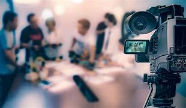
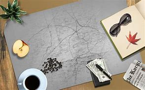

.jpg)
With most recognized professions like law or accounting, specific educational credentials and licenses are legally required to be
eligible to work in the field (Lee, Michelle. The Rise of Amateur journalism and its implications, lane Publishers, 2019).
For example, one cannot practice medicine without am M.D. But journalism has no such mandates – no degrees’ certificate or
licensing exams are prerequisites for employment as a reporter.
This open access implies journalism is not a true regulated profession.
.jpg)
Many established professions such as law and medicine command strong public respect and trust but people
are often skeptical about the credibility of journalism (Thompson James, The Erosion of Journalistic integrity. Credibility,
Trust and the professions Image Journey Books, 2018), For instance, polls show doctors are trusted much than journalist.
This lack of prestige weakens the assertion that journalism has the same professional standing
.jpg)
Journalism has expensive constitutional right that allow substantial freedom compared to
regulated professions governed by statues that impose standards and constraints
(Clark Jennifer Journalism: Protected. Not Professional Legal Books, 2020). For instance, lawyers and doctors are legally restricted
in many ways journalists are not.
These legal protections for journalism set it apart from accredited professions.
.jpg)
Robert McChesney “Rich Media, Poor Democracy: communication Politics in dubious times (1999)”.
He contends that, the concentration of media ownerships undermines journalistic independence and
professionalism leading to a decline in quality journalism.

Timothy E. Cook in “Governing with the news: The news media as a political institution” –
Cook examines the relationship between the news media and political power,
arguing that journalism often serves the interests of those in power rather than
adhering to the principles of a true profession.

Michael Schudson in “Discovering the news: A social History of American Newspaper”.
Schudson discussed how journalism as a profession due to its lack of formal credentially requirements and standardized ethical codes.
These books show the perspectives that journalism is not a profession. But journalism is a profession or
not depend on how they are able to accept the challenges of today.